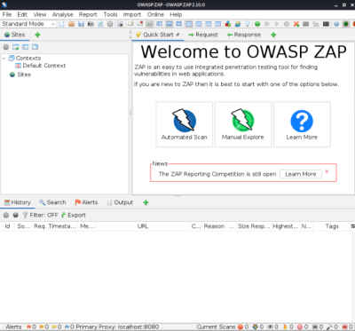
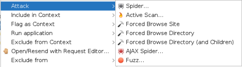

ZAP (OWASP Zed Attack Proxy)
ZAP was forked from the (now retired) Paros proxy. ZAP is written in Java, so it runs on just about any operating system.
ZAP: Attack Menu  ◇ Active scan → Actively scans a site, searching for vulnerabilities (ZAP's passive scanner is always running)
◇ Forced browsing → incorporates DirBuster's functionality into ZAP. DirBuster is a standalone Java application that is no longer under active development.
◇ Spider → traditional web spider, which attempts to identify all content on a website.
◇ AJAX spider → Spider that can parse AJAX content, enabling it to (potentially) discover additional dynamic content that is missed by most web spiders
◇ Fuzzing → improved significantly as of Version 2.4 and now rivals Burp's fuzzer(Burp Intruder)